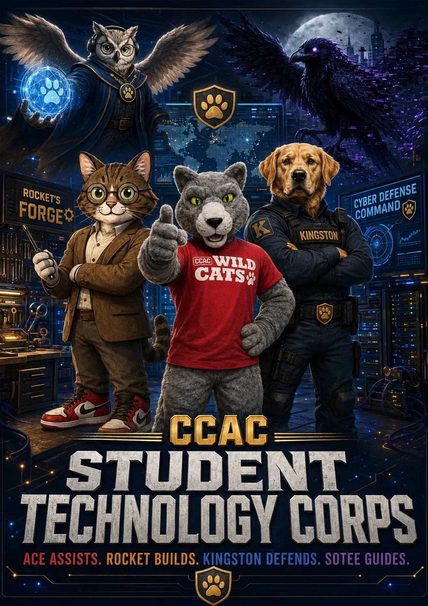

v0.8 visual: Recovered media applied from the SOTE approved-media backup. Dedicated approved visuals are used where available; facility reference media is used only where no dedicated approved zone visual exists yet.
Briefing zone
Command Briefing Room
Tour, planning, review, and storytelling zone for turning technical work into clear communication.

Purpose
The Command Briefing Room helps students explain what they built, what changed, what is blocked, and why it matters to different audiences.
Student verbs
Brief, plan, explain, present
Character layer
SOTEE and Ace
Current state
This zone is ideal for tour scripts, project reviews, advisory board visits, mission debriefs, and donor-facing SOTE storytelling.
Student activity
- Practice project briefings
- Summarize mission reports
- Prepare visitor tour language
- Connect technical work to workforce outcomes
Demo and future missions
- Visitor tour stop
- Student project briefing
- Mission debrief
- Technology Cadet: First Signal
Publication guardrail
This page is public-safe. Do not add credentials, sensitive IP addressing, production network details, private student information, unreviewed screenshots, or photos that expose sensitive labels until the SOTE media review process is in place.